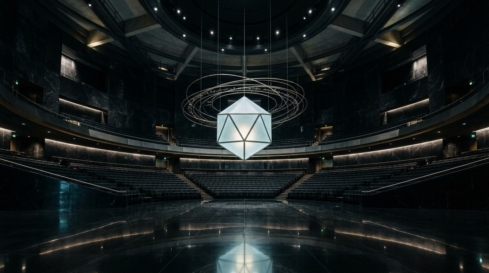

Real-Time ELO-Rated Competitive Mathematics at Global Olympiad Scale
Unifying 5 Core Mathematical Arenas, 60 meritocratic progression tiers, 1v1 Bullet Blitz duels, post-contest proof auditing, and 42 specialized AI engines inside a zero pay-to-win global competition infrastructure calibrated by real-time ELO and QPRT-4 integrity guards.

Real-Time ELO-Rated Competitive Mathematics at Global Olympiad Scale.
Competitive programming has thrived for decades on real-time rating systems, live global rounds, and post-match peer hacking through platforms like Codeforces. Meanwhile, competitive mathematics remains trapped between static, 1990s-era asynchronous forums (such as AoPS) and gatekept, $300-$500+ preparatory courses.
Arithmo Edge eliminates that asymmetry. Engineered as a federated, zero-to-low-cost global infrastructure, Arithmo Edge brings sub-second latency, real-time ELO matchmaking, 1v1 Bullet Blitz duels, live Codeforces-style rated contests, , and deterministic to pure Olympiad mathematics—making elite mathematical training and verifiable competitive credentials accessible to every student on Earth.
V4.0 Grand Singularity Global Launch Countdown
Targeting December 31, 2026 at 12:00 Midnight (2027-01-01 00:00:00) · .com Domain Launches in 2 Months

The Olympiad Arena Revolution
5 Core Mathematical Arenas · 60 Progression Tiers · 1v1 Bullet Blitz & Shadow Bot Gauntlet · Proof-Based Grading & Find the Flaw—built to bring real-time competitive adrenaline to every Olympiad aspirant worldwide.
02 · Interactive Instant Olympiad Trial
No-Login 60-Second Guest Math Duel
Experience deterministic browser grading before creating an account. Solve an authentic Olympiad prompt under the 60-second clock to project your live starting ELO and preview your future @handle before our V1.0 Genesis launch on December 16, 2026.
Find the remainder when 2²⁰²⁶ + 3²⁰²⁶ is divided by 5.

Instant Olympiad Calibration Before Registration
Every integer check runs locally at zero server latency—estimating provisional ELO brackets across all 5 arenas while keeping @handle reservations previewed until V1.0 opens on December 16, 2026.
Your simulated Arena Readiness rating combines baseline problem difficulty (1350–1850 ELO) with a deterministic solve-speed multiplier, automatically mapping you to one of the 12 canonical Shadow Bot sparring tiers from Spark through Apex.
Once public Gmail SSO onboarding opens, every verified @handle permanently locks across all 14 federated websites via Arithmo-Core-SDK (engine.js), giving new entrants 7 days of free rename flexibility.
03 · Genesis Launch Early-Bird Cohorts · Strictly Capped Allocation
Founding Solver, Academy & Referral Launch Perks
Early verified contributors, founding institutions, and community ambassadors lock permanent launch advantages prior to our V4.0 custom .com full production debut.

Fair Meritocracy Rewarding Early Olympiad Pioneers & Institutions
Every Genesis cohort seat unlocks premium AI mentoring and batch academy tools without ever altering live ELO math ratings. First 50 verified @handles start with 3 months FREE Singularity when claiming opens on December 16, 2026.
Subsequent Cohort #2 entrants (next 100 verified @handles) receive 3 months FREE Pro, the first 5 KYB-approved Founding Academies lock 25% off for 3 months, and community referrals award +$2.00 closed-loop Arithmo Wallet credit for every 3 verified friends.
3 Months FREE Singularity
Unlimited AI Premium (2x Hybrid), 150/mo Shadow Bot Gauntlets, Private Rooms & Forge hosting at $0 for 90 days.
3 Months FREE Pro
150 monthly AI queries (30 Premium 2x + 120 General 1x), 50/mo Unbounded Shadow Bots & V10.3 Smart Mistake Deck.
25% OFF for 3 Months
25% invoice reduction across General, Premium, Supreme, or Enterprise base + roster dues after Pop-Up KYB approval.
+$2.00 Arithmo Wallet Credit
When 3 invited friends verify Gmail SSO + complete 1 rated contest or guest duel, +$2.00 closed-loop Wallet Credit posts instantly.
04 · 14-Website Federated Micro-Frontend Map
Filter All 14 Live Portals on arithmo-edge.github.io
Every arena, contest engine, leaderboard, AI tutor, institutional academy, and governance war-room deploys as an isolated micro-frontend synchronized through engine.js.
Arithmo-Edge Core Portal
Central Auth, @handle Governance, Closed-Loop Wallet & All-Rounder Telemetry
Number Theory Arena
Monday Rated Rounds · #00F0FF Electric Cyan · 12 Ranks & Modular Rigor
Algebra Arena
Tuesday Rated Rounds · #8B5CF6 Vibrant Violet · Functional Equations & Inequalities
Geometry Arena
Wednesday Rated Rounds · #F59E0B Laser Amber · Built-In GeoGebra Construction Studio
Combinatorics & Permutation
Thursday Rated Rounds · #10B981 Mint Emerald · Graph Theory, Games & Invariants
Mixed Mathematical Olympiad
Friday + Sunday Mega Anchor · #F43F5E Nebula Rose · Primary All-Rounder & World Cup Core
Contest Section Portal
7-Day Zero-Rest Engine, T-30s Contract, 1v1 Bullet Blitz & Find the Flaw
Standings Portal
100% Public Without Login · 14 Live Leaderboards, Friends, Sovereign Council & Patrons
Arithmo Personal AI
Socratic Mentor (Gemini + Qwen-Math + SymPy) · Contest Hard-Locked + Soft-Pinch
Arithmo Academy Arena
KYB Schools & Math Guilds · Dual-Handle Context, Guild AI, Task Tab & Anti-Reselling
Arithmo Forge
1500+ ELO Problemsetting Studio · 5-Pillar Validation & Private Golden Vault
Arithmo Socials
KaTeX Proof Blogs (+5 ELO), 2000+ Expert Q&A, Guidebooks & 7-Day Forensic Appeals
Headquarters Core
HQ-Only War-Room · 5-Tier Monotonic Ladder, Strict Chronology & Supreme HQ AI
Arithmo Database
Launches Post #1–#12 · Historical Contests, IMO/Putnam/RMM/BMO/BdMO & AI Editorials

14 Isolated Subsites · Zero Single-Origin Bottleneck
Each specialized subsystem runs on its own resilient endpoint under arithmo-edge.github.io while sharing unified SSO identities, closed-loop Wallet credits, and live contest state.
Cloudflare Workers act as the stateless edge glue connecting static GitHub Pages repositories to Firebase Cloud Firestore, achieving 98% read-cost reduction via public Read-Shield JSON snapshots on Subsite #7 Standings.
Traffic spikes during Sunday Mega Arena on Subsite #6 remain completely isolated from Academy classrooms on Subsite #9 or archive queries on Subsite #13, while all 14 domains remain synchronized as the custom .com rollout launches.
05 · Color-Coded Mathematical Domains
5 Core Arenas: Interactive Track & Syllabus Explorer
1v1 Rated Duels, 5-Minute Direct Rival Challenges, and live strictly inside these 5 Core Arenas (Subsites #1–#5), keeping 10 Core Arena .
Orbit All 5 Federated Subsites in 3D Space

06 · Zero Pay-to-Win Constitutional Guarantee & Telemetry Scale
Verified Meritocracy Backed by QPRT-4 & 14-Point Legal Shield
Every point is earned exclusively through deterministic problem solutions, blind proof grading, integrity defenses, and audits.

Unrated Guest Access & Verified @handle Security
Guests browse all 14 live standings freely and audit . Registered @handles unlock rated competitions guarded by mandatory Live Contest Full-Screen & App/Tab Lockdown, optional Mon–Sat , and Sunday Mega proctoring under .

Transparent Closed-Loop Billing & Legal Shield
Lemon Squeezy and bKash/Nagad exclusively preload your closed-loop Arithmo Wallet (+10% top-up bonus). Every checkout concludes with a 60-second Cancellation Grace countdown backed by Bangladesh PRC/e-TIN, COPPA/GDPR-K, and EU DSA due process.
07 · Founding Leadership & Custodianship
Pioneer Contributors Spotlight
Rayaan Tasnim
Founder & Chief System Architect (13 Years Old)
Architect of the Prime-Factor.app pre-era into the 14-portal Arithmo-Edge network, , Quad-Phase Resilience Theory, biometrics, 42-engine AI routing, and Cloudflare Workers + Firebase edge orchestration.
Jalees Habib
Co-Founder & Chief Mathematical Engineer
Lead architect of Olympiad problem synthesis across all 5 core arenas, the Zero-Fragmentation Olympiad Tag policy, Proof-Based Grading + 2000+ ELO Grandmaster Peer Review, post-contest Find the Flaw audits, and the 5×4 Private Golden Vault co-authored with Rayaan Tasnim.

From Prime-Factor.app to Global Olympiad Infrastructure
Combining full-stack serverless orchestration with rigorous Golden Vault problem authorship under immutable constitutional equity vesting and conflict-free contest rules.
Anchored by 24-month founder equity vesting (60% Core System Architect Rayaan Tasnim, 40% Chief Mathematical Architect Jalees Habib), legal governance operates under Adult Guardian Financial Custodianship with strict PRC/e-TIN tax compliance.
Co-Founders retain full HQ Competitor Privilege to participate in public rated rounds whenever strict author conflict-of-interest checks confirm zero prior exposure to Golden Vault problem drafts.
08 · Decimal Release Engineering Preview
Staged Decimal Rollout: V1.0 through V4.0 Grand Singularity
Every production subsystem graduates in disciplined decimal waves culminating on Dec 31, 2026 Midnight—paired with our custom .com domain launch in 2 months.

Engineered for Zero-Downtime Public Rollout on arithmo-edge.github.io & Custom .com
Every subsystem unlocks in audited increments across December 2026—starting with the 5 Core Arenas and Shadow Bot Gauntlet in V1.0, scaling through AI & Academy SaaS in V2.0–V3.0, and activating full World Cup governance at Midnight Dec 31, 2026.
Sequential decimal waves verify Firebase security rules, Cloudflare Edge PAT isolation, closed-loop Lemon Squeezy and bKash/Nagad wallet webhooks, and QPRT-4 ChronoVault failover under live concurrency before the custom .com topology joins production within 2 months.
Genesis Core, 5 Arenas & Shadow Bot Gauntlet
- · V1.0 (Dec 16): Genesis Public Launch — Core Portal + 5 Core Arenas, guest access, @handle sign-up & Early-Bird Offers
- · V1.1 (Dec 17): 1v1 Matchmaking (Ranked Arena Duel 60s pool + Direct Rival Challenge 5-min URL with 30s Stealth Bot)
- · V1.2 (Dec 18): Shadow Bot Gauntlet (Spark to Apex BOT, 12 personas) & Public Standings (Subsite #7 — 14 Leaderboards)
- · V1.3 (Dec 19): Free Printable Guidebook (KaTeX renderer) and cross-site global notification bell
Live Contests, BdMO Warm-Ups, Find the Flaw & Socials
- · V2.0 (Dec 20): Contest Portal (#6) — 7-day calendar, T-30s contract, lockdown & <3 quorum safeguard
- · V2.1 (Dec 21): General Velocity Flow (Overtime + Touch Numpad) & 3-Column Toph-style Expert Dashboard
- · V2.2 (Dec 22–24): BdMO Special Warm-Up Championship (Primary–Higher Secondary), 2000+ Peer Review & Find the Flaw
- · V2.3 (Dec 24): Arithmo Socials (#11 — Blog-to-Lab +5 ELO, 2000+ Q&A, Appeals) + Headquarters Core (#12)
Arithmo AI, Academy Arena, Forge & Wallet Checkout
- · V3.0 (Dec 26): Arithmo Personal AI (#8) dual-model selector & semantic metering + QPRT-4 & Alert AI Soft-Pinch
- · V3.1 (Dec 27): Arithmo Academy Arena (#9) — 4 packages, Guild AI, KYB pop-up, Task homework & Academy Guidebook
- · V3.2 (Dec 29): Arithmo Forge (#10), Plus/Pro/Singularity, 8 Core + 5 Shadow Packs, 100% Wallet + 60s Grace Cancel
- · V3.3 (Dec 30): Offline-First Installable PWA (Service Workers + IndexedDB) & AI Smart Mistake Deck (7-day)
Grand Singularity & Arithmo Database Launch
- · Synchronized with global countdown hitting 00:00:00:00 at December 31, 2026 12:00 Midnight
- · Unlocks 14th website Arithmo Database (Subsite #13) + IMO, Putnam, RMM, BMO, BdMO archives & AI editorials
- · Inaugural Sunday Mega Arena Contest & Top 128 Annual World Cup (👑) activation
- · Custom .com domain rollout joining permanent arithmo-edge.github.io infrastructure in 2 months
09 · Complete 13-Page Flagship Navigation & FAQ
Explore Every Specialized Subsystem or Review Common Questions
Why Arithmo-Edge?
Legacy vs. Arithmo matrix, ELO uniqueness & QPRT-4 fairness.
14-Site Architecture
14 portals, Cloudflare Workers, & BigInt Miller-Rabin.
5 Arenas & 60 ELO Tiers
3-Button Contest Tab, 12 Shadow Bots & ELO simulator.
Contest Engine & Flaw Audit
BdMO categories, 3-user quorum, 3-mode credits & World Cup.
42-Engine AI Core
Gemini + Qwen-Math + SymPy & Zero-Copy Genome.
QPRT-4 & Legal Shield
Full-Screen App Lockdown, MBTS & 11-Flag Blackhole.
Academy Arena
Founding 25% discount, Dual-Handles & KYB shield.
Pricing & Wallet Checkout
Wallet-only checkout, 60s grace & Shadow Bot packs.
Socials, Forge & Guidebooks
5-Pillar Forge, 5×4 Golden Vault & Dual Guidebooks.
Headquarters & Patrons
5-Tier HQ Ladder, Prime Sovereigns & Patron Wall.
Decimal Rollout Roadmap
Phase 0–V4.0 Dec 2026 calendar, Database & 8 spin-offs.
Pioneer Contributors
Rayaan Tasnim, Jalees Habib & Prime-Factor legacy.

Navigate Every Technical, Security & Commercial Blueprint
Jump directly into QPRT-4 forensic containment, the 60-Tier Shadow Bot Gauntlet simulator, closed-loop Wallet checkout, or the 20-year Holding Group roadmap.
Pages 02 through 13 document every constitutional rulebook—spanning the 10-point AoPS/MCQ comparison matrix, 14-site Arithmo-Core-SDK federation, 42 AI engines with semantic TokenMeter billing, and KYB Academy workspaces.
Inspect full 5-Tier Monotonic HQ governance rules, Patronage safeguards, and the V5.0–V11.0+ roadmap linking Olympiad Edge toward the Arithmo Database archive and 8 future discipline spin-offs.